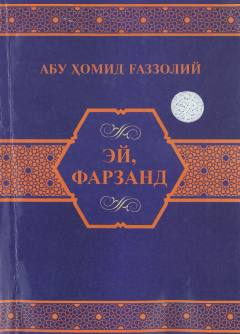

EФFarzandlar tarbiyasi va axloqiga bag‘ishlangan mashhur nasihatnoma.
Abu Homid G‘azzoliyning ushbu mashhur risolasi insoniylik, axloq, ilm olish odoblari va hayot mazmuni haqidagi nasihatlardan iborat. Asar buyuk mutafakkirning o‘z shogirdiga va barcha izlanuvchilarga yo‘llagan samimiy ma’naviy vasiyatnomasidir.